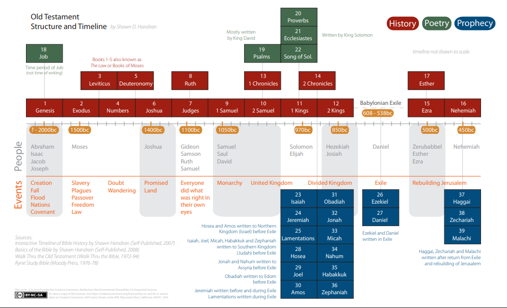

OTSurvey - Session 1 Part 1 - Introduction/Doctrine of Inspiration
Date: 4000 - 425 BC
Writer: 70 writers
Category: Law, Psalms, and the prophets
Description: What Jesus read to his disciples, the first 39 books of the Old Testament.
BibleReference: Genesis - Malachi
CDI Notes
Instructors Guide (pg.19)
You will KNOW:
- What the Bible says about its own divine inspiration.
- The traditional three-fold division of the Hebrew scriptures.
You will be ABLE TO:
- Explain the Doctrine of the Inspiration of the Scriptures.
You will THINK ABOUT:
- Where the New Testament came from.
Begin video.
Old Testament Survey
- Survey of the Old Testament will be limited in some areas.
- This is not an in-depth look at each individual book of the Old Testament.
- This does not include an overview of the Apocrypha.
The Bible Jesus Read
- The first 39 books of the Bible were the Bible Jesus read.
- When Christ or the apostles referred to the Scriptures, they meant Genesis through Malachi.
- What we call the New Testament was being lived and written in the First Century AD.
- The Law, the Prophets and the Writings – the three divisions of Hebrew Scripture – were the Scriptures the apostles used to preach the good news of Jesus.
The New Testament Writers Used the Old Testament
- The Lord Jesus Christ progressively revealed in the Law of Moses, the Prophets and the Psalms.
- Believing, as Jesus said, “…these are the Scriptures that testify about me.” John 5:39
All Scripture is God-Breathed
- Review the doctrine of the inspiration of Scripture and note how this relates to the ancient Hebrew writings.
- Paul’s last letter to Timothy, “All Scripture is God-breathed and is useful for teaching, rebuking, correcting and training in righteousness so that the man of God may be thoroughly equipped for every good work.” 2 Timothy 3:16-17
- Later he asked Timothy, “When you come, bring… my scrolls, especially the parchments.” 2 Timothy 4:13
- The New Testament was only then being written and when Paul referenced the “Scriptures,” he meant what we call the Old Testament.
Prophecy of Scripture
- “Above all, you must understand that no prophecy of Scripture came about by the prophet’s own interpretation. For prophecy never had its origin in the will of man, but men spoke from God as they were carried along by the Holy Spirit.” 2 Peter 1:20-21
- The Old Testament canon had been determined by the time the Hebrew Scriptures were translated into Greek.
- Canon means those writings that measured up to the standard and were acknowledged as being Scripture.
- The Septuagint (LXX), was named for the supposed 70 scholars who composed it.
- Compiled after the time of the Babylonian exile around 500 BC.
- Paul, Peter and the apostles taught the good news of Jesus from what they knew to be the God-breathed Scriptures of Moses, the Prophets and the Writings.
Road to Emmaus
- In one of Jesus’ post-resurrection appearances He met two of His disciples on the road to Emmaus.
- They were discouraged because the hope they had placed in Jesus as their Messiah had been wiped out by His death.
- Even rumors of His empty tomb could not keep them from walking away from the scene of His recent execution.
- When Jesus met these two disciples on the road to Emmaus, they were “kept from recognizing Him,” and He said, “How foolish you are, and how slow of heart to believe all that the prophets have spoken. Did not the Christ have to suffer these things and then enter His glory?” Luke adds, “And beginning with Moses and all the Prophets, He explained to them what was said in all the Scriptures concerning Himself.” Luke 24:25-27
Jesus in the Upper Room
- “‘This is what I told you while I was still with you: Everything must be fulfilled that is written about Me in the Law of Moses, the Prophets and the Psalms.’ Then he opened their minds so they could understand the Scriptures.” Luke 24:44-45
- “This is what is written: The Christ will suffer and rise from the dead on the third day, and repentance and forgiveness of sins will be preached in His name to all nations, beginning at Jerusalem.” Luke 24:46-47
- All this could be known of God’s redemptive plan through Jesus from what we call the Old Testament for these were indeed “the Scriptures” - the Bible Jesus read.
Jesus Confronted the Jews
- During His ministry, Jesus had confronted the Jews with their refusal to believe him. “You diligently study the Scriptures because you think that by them you possess eternal life. These are the Scriptures that testify about me, yet you refuse to come to me to have life.” John 5:39-40
- The Old Testament Scriptures were and are the God-breathed revelation of Messiah Jesus.
The Book of Matthew
- Quotes the Hebrew Scriptures more than 60 times to prove to his Jewish readers that Jesus of Nazareth is indeed, their long-awaited Anointed One, the King of the Jews.
The Book of Hebrews
- The writer of Hebrews identifies the true Author of the Scriptures, “So, as the Holy Spirit says: ‘Today, if you hear his voice, do not harden your hearts…’” Hebrews 3:7
Sermon on the Mount Matthew
- “You have heard it said… but I tell you…,” (Matthew 5), not to replace those words with His own but to explain that God’s desire for His people had always been not merely outward obedience but inward renewal.
- He declared, “Do not think that I have come to abolish the Law or the Prophets; I have not come to abolish them but to fulfill them. I tell you the truth, until heaven and earth disappear, not the smallest letter, nor the least stroke of a pen, will by any means disappear from the Law until everything is accomplished." Matthew 5:17-18
- These references demonstrate the reliance the New Testament authors, and Christ himself, placed on the infallible, God-breathed Scriptures: The Law of Moses, the Prophets and the Writings.
The Doctrine of Inspiration
- The doctrine of inspiration states the Scriptures are God-breathed in every word and in every detail (verbal and plenary).
- The Scriptures are without error in the original manuscripts.
- God has preserved the Scriptures through the centuries so we can have complete confidence that the Bible we read today is God’s Word.
- This is true of the entirety of Scripture from Genesis to Revelation, and especially accurate concerning the Law, the Prophets and the Writings.
What Does the Old Testament Say About Itself?
- God is the initiator of communication. He speaks and creation happens. He speaks and everything comes into existence.
- “Thus says the LORD…” (with several variations), occurs nearly 4,000 times in the Old Testament.
- The author of the New Testament book of Hebrews (himself obviously a scholar of the ancient manuscripts), stated the truth when he said, “In the past God spoke to our forefathers through the prophets at many times and in various way.”
Hebrews 1:1
- God spoke in person with Adam and Eve, Cain, and later with Noah, Abraham, Isaac and Jacob. He called Moses from a burning bush and on Mt. Sinai and then wrote the Ten Commandments with His finger on tablets of stone. Exodus 31:18
- David gives the Spirit credit for his poetic skill when he states: “The Spirit of the LORD spoke through me; His word was on my tongue.” 2 Samuel 23:2
God Speaking to Joshua
- God speaks to Joshua after the death of Moses: “Be strong and courageous.” Joshua 1:6-9
- “Do not let this Book of the Law depart from your mouth; meditate on it day and night, so that you may be careful to do everything written in it. Then you will be prosperous and successful.” Joshua 1:8
- The Books of Moses are not merely man’s rules or standards of behavior, but the power-imparting words of God.
Psalm 19
- Psalm 19 gives a powerful sense of the inestimable value an Old Testament believer placed on the words of divine Scripture. "The law of the LORD is perfect, reviving the soul. The statutes of the LORD are trustworthy, making wise the simple. The precepts of the LORD are right, giving joy to the heart. The commands of the LORD are radiant, giving light to the eyes…The ordinances of the LORD are sure and altogether righteous. They are more precious than gold, than much pure gold; they are sweeter than honey, than honey from the comb. By them is your servant warned; in keeping them there is great reward." Psalm 19:7-11
Psalm 119
- Psalm 119, the longest poem in the Old Testament, is written entirely in praise of God’s Word.
- Memorable statements concerning the value of Scripture come from this acrostic Psalm.
- “How can a young man keep his way pure? By living according to Your Word.” Psalm 119:9
- “I have hidden Your Word in my heart that I might not sin against You.” Psalm 119:11
- “The law from Your mouth is more precious to me than thousands of pieces of silver and gold.” Psalm 119:72
- “Your Word, O LORD, is eternal; it stands firm in the heavens.” Psalm 119:89
- “Your Word is a lamp to my feet and a light for my path.” Psalm 119:105
- “The unfolding of Your Word gives light; it gives understanding to the simple.” Psalm 119:130
- “Great peace have they who love Your law, and nothing can make them stumble." Psalm 119:165
- The inspired writers of the Old Testament gave credit to the true Author of their works. They were deeply impressed with the value of these writings and moved by the power of His Word.
Scriptures, the Law, the Prophets, and the Writings
- Hebrew Scriptures, the Law, the Prophets and the Writings, contain their own testimony to their divine authorship.
- The writers of the New Testament, with these works as their only source, preached the Gospel of Christ Jesus.
Key Verses
(John 5:39-40, 2 Timothy 3:16-17; 4:13, 2 Peter 1:20-21, Luke 24:25-27; 44-47, Hebrews 1:1; 3:7, Matthew 5:17-18, Exodus 31:18, 2 Samuel 23:2, Joshua 1:6-9, Psalm 19, Psalm 119)
Class Exercise
Questions
- True/False God is the author of the Bible?
- True/False The ultimate reason that Scripture is authoritative is because God is its author
True. Paul writes that “all Scripture is breathed out by God” 2 Timothy 3:16. Scripture, then, is God speaking God's words.
True. The men who wrote the books of the Bible were speaking from God (2 Peter 1:21). Scripture, then, is God speaking and we are subject to Scripture’s authority because we are subject to God’s authority.
Technically, the Bible that Jesus read was the LXX, not the 39 books of our Old Testament. Discuss why this is true.
Have your students refer to the reading assignment list in this guide for future reading assignments. Assign reading from Jesus on Every Page, the Preface and Chapters 1-6. Also remind your students of the Old Testament reading assignments.
Assign the Bible timeline project, instructions are included in this guide book.
Assignment: Bible Timeline
Instructions
Old Testament Timeline Assignment
The Old Testament (also known as the Jewish Tanakh) is the first 39 books in most Christian Bibles and contains the creation of the universe, the history of the patriarchs, the exodus from Egypt, the formation of Israel as a nation, the subsequent decline and fall of the nation, the prophets (who spoke for God), and the Wisdom books.
The Old Testament Bible timeline is a classroom project completed throughout the courses as designated by you, the pastor/mentor. It allows your students to see the whole scope of Scripture and to visually integrate with the Survey of the Old Testament Survey sessions. If possible, leave a timeline posted during future classes. Prior preparation by you is required.
Preparation for Timeline:
- Have different colored markers or pens available for each group. (four students per timeline if possible.) Use a different color for each Group outlined below.
- If space permits, arrange three 7-foot tables end-to-end for each timeline covered with 24 feet of butcher paper. Adjust your dimensions as needed for smaller spaces/tables).
- Draw a line down the middle with eight equal divisions. Include plenty of space since you will be adding to the timeline as you go through the course. If butcher paper is not available, you may want to use multiple manila folders taped together. This allows for easy folding of the project when finished.
- Break into groups of four students per timeline for larger groups and assign a leader for each group. Students will be supplied timeline references (refer to Timeline References section of the guide) to fill in their timeline. Different colored pens should be used for different groups of events listed below. Have group leader make assignments.
- Additional dates may be included from www.biblehub.com/timeline/ if online access is available in the classroom. Students may also supplement post Biblical historical events from personal knowledge.
Timelines References
Group 1: Biblical Events (approximated and rounded):
- 4000 BC - CREATION and the FALL of MAN
- 2350 BC - The FLOOD
- 2235 BC - The TOWER of BABEL
- 1920 BC - The CALL of ABRAHAM
- 1760 BC - JACOB flees from ESAU
- 1715 BC - JOSEPH becomes EGYPT’S PRIME MINISTER
- 1705 BC - JACOB’S FAMILY enters EGYPT
- 1635 BC - JOSEPH DIES
- 1570 BC - MOSES BORN
- 1490 BC - The EXODUS
- 1450 BC - JOSHUA and the ISRAELITES cross RIVER JORDAN
- 1095 BC - SAUL becomes ISRAEL’S first KING
- 1055 BC - DAVID becomes ISRAEL’S second KING
- 1015 BC - SOLOMON becomes ISRAEL’S third KING
- 1005 BC - SOLOMON builds ISRAEL’S first TEMPLE
- 975 BC - The KINGDOM is DIVIDED into ISRAEL & JUDAH
- 721 BC - ISRAEL goes into ASSIRIAN CAPTIVITY
- 586 BC - JUDAH goes into BABYLONIAN CAPTIVITY
- 535 BC - The JEWS RETURN from EXILE
- 515 BC - The SECOND TEMPLE is BUILT
- 450 BC - NEHEMIAH rebuilds JERUSALEM’S WALLS
- 320 BC - JEWS CONQUERED by ALEXANDER
- 165 BC - JEWS LIBERATED by the MACCABEES
- 64 BC - JEWS CONQUERED by ROME
- 20 BC - HEROD REMODELS the second TEMPLE
- 4 BC - JESUS is BORN
- 2 BC - PAUL is BORN
- 27 AD - JESUS is CRUCIFIED
Group 2: KEY PEOPLE (approximated and rounded):
- ADAM - 4000/3070 BC
- SETH - 3870/2960 BC
- ENOS - 3770/2870BC
- CAINAN - 3680/2770 BC
- MAHALALEL - 3610/2715C
- JARED - 3545/2580 BC
- ENOCH - 3380/3015 BC
- METHUSELAH - 3310/2350 BC
- LAMECH - 3130/2355BC
- NOAH - 2950/2000 BC
- SHEM - 2450/1850 BC
- ARPHAXAD - 2350/19
- SALAH - 2310/1880BC
- EBER – 2280/1820BC
- PELEG – 2250/2010
- REU – 2220/1980
- SERUG -2185/1955
- NAHOR – 2155-1920
- TERAH – 2125-1920
- ABRAHAM – 2170/1990 BC
- ISSAC – 2070/1890 BC
- JACOB – 2010/1860 BC
- JOSEPH – 1920/1810 BC
- MOSES – 1530/1410 BC
Group 3: PROPHETS (approximated and rounded):
- ISAIAH – 740/690 BC
- JEREMIAH – 630/580 BC
- EZEKIEL – 590/570 BC
- DANIEL – 610/540 BC
- HOSEA – 760/720 BC
- JOEL – 840/? BC
- AMOS – 760/750 BC
- OBADIAH – 850/840 BC
- JONAH – 780/750 BC
- MICAH – 740/700 BC
- NAHUM – 660/650 BC
- HABAKKUK – 610/600 BC
- ZEPHANIAH – 640/630 BC
- HAGGAI/ZECHARIAH – 520/490 BC
- MALACHI – 435/415 BC
Group Four: BOOKS OF THE BIBLE (find approx. time period covered & when written):
It’s important to note that even though the Bible is God’s inspired, inerrant Word, there is some disagreement as to the exact dating of the Biblical books.
| Book of the OT | Written in Date | Book of the OT | Written in Date |
|---|---|---|---|
| Job | 2000 BC; Written? | ||
| Genesis | 1490 BC | Leviticus | 1490 BC |
| Exodus | 1490 BC | Numbers | 1490 BC |
| Deuteronomy | 1490 BC | ||
| Joshua | 1450 - 1390 BC | Psalms | 1400 - 500 BC |
| Judges | 1374 - 1129 BC | ||
| Ruth | 1150? BC | ||
| 1 Samuel | 1100 - 1015 BC | 1 Chronicles | 1010 -1015 BC; Written: 450 - 425 BC |
| 2 Samuel | 1015 - 975 BC | 2 Chronicles | 1015 - 500 BC; Written: 450 - 425 BC |
| Song of Solomon | 1000 BC | Proverbs | 1015 - 700 BC |
| 1 Kings | 975 - 850 BC | Ecclesiastes | 970 BC |
| 2 Kings | 850 - 500 BC | Joel | 835 BC |
| Isaiah | 740 - 690 BC | Jonah | 760 BC |
| Amos | 755 BC | Hosea | 720 BC |
| Michah | 700 BC | Nahum | 663 - 612 BC |
| Jeremiah | 627 - 585 BC | Daniel | 605 - 536 BC |
| Habakkuk | 607 BC | Ezekiel | 593 - 560 BC |
| Lamentations | 586 BC | Obadiah | 586 BC |
| Haggai | 520 BC | ||
| Zephaniah | 520 - 518 BC | Zechariah | 520 - 518 BC |
| Esther | 465 BC | ||
| Ezra | 450 BC | Malachi | 450 BC |
| Nehemiah | 445 - 425 BC |
